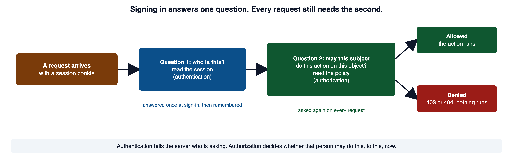
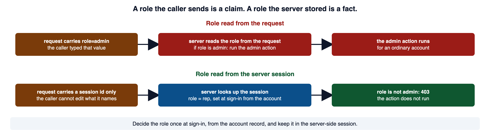
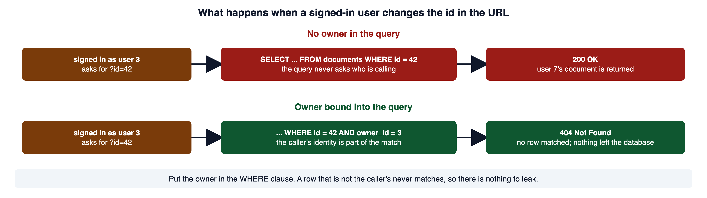
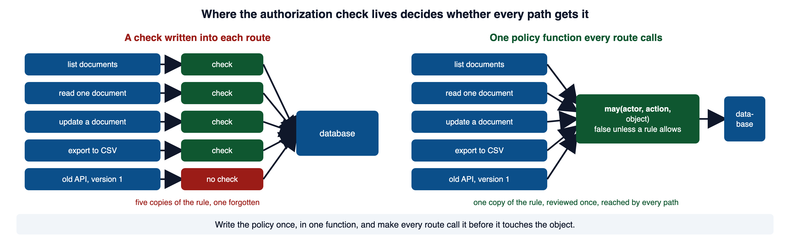
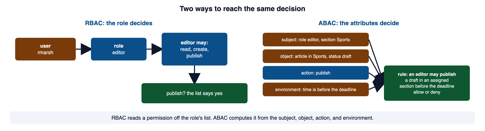
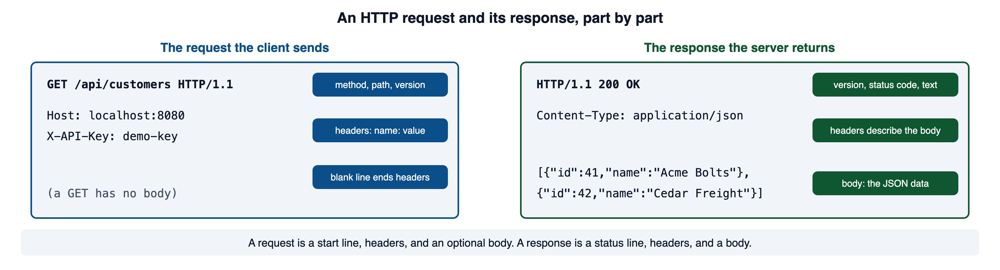
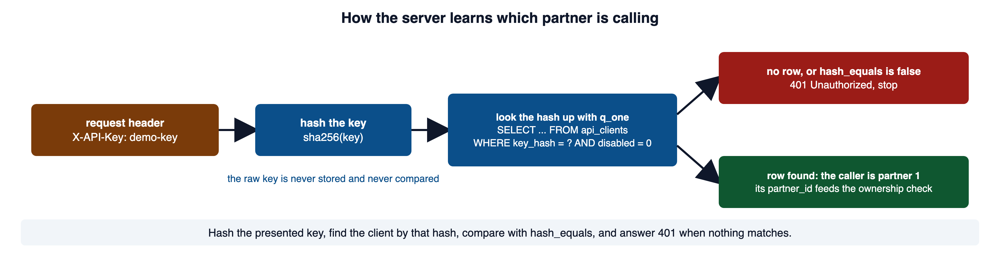
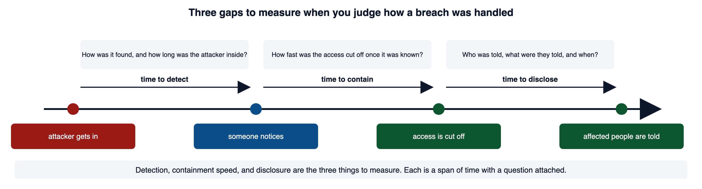

Two partners use the same API, but each owns a different set of records. A successful sign-in answers who is calling. Each object request still needs a decision about whether that caller may reach that record.
Keep your portal open while you read, and send each request yourself. Red code blocks show a shape to recognize and never ship. Green code blocks show the pattern to copy.
1Required reading
These two are required reading for the module. This page teaches everything the assignment and the quiz need; the readings give the same material in the industry's own words, which is what a scanner finding, a CVE advisory, or a bug report will use.
- OWASP Top 10:2025 A01 Broken Access Control. The highest-ranked category in the current Top 10. It lists the common failures, the prevention steps, and the forty CWEs it maps.
- OWASP Authorization Cheat Sheet. The operative reference for this module: least privilege, deny by default, a check on every request, and safe failure.
2Authentication is not authorization
Signing in proves who is at the keyboard. It says nothing about what that person may touch. Those are two different questions, and a server has to answer both.
A valid PHP session gives you a principal, and only that.
<?php
session_start();
$currentUserId = $_SESSION['user_id'] ?? null;Knowing the caller is user 12 tells you nothing about whether user 12 may read record 4,891. The two questions have separate answers.

When the authorization decision is missing, nothing errors. The feature works for the person using it. That silence is why broken access control (CWE-284) is A01 in the OWASP Top 10. In the data behind the 2025 list, every tested application had some form of it. Correct code and unauthorized code read the same, so the defect is invisible in the file that has it.
PHP Manual: $_SESSION documents the array the first example reads. W3Schools: PHP Sessions has a live editor for the same syntax.
3The four parts of an authorization decision
Every authorization decision has four parts. Writing them out turns a vague intention into something you can implement and test.
| Part | Question | Examples |
|---|---|---|
| Subject | who is asking? | the signed-in user, a partner's program, an anonymous visitor |
| Action | what do they want to do? | read, update, delete, publish, export |
| Object | to what? | a profile, an invoice, a document, a customer account |
| Context | under what conditions? | ownership, role, account state, time, amount |
A policy written as a testable sentence names each part. A signed-in author may read a document only when the document belongs to that author. An editor may publish a draft in a section they are assigned to. A disabled account may do nothing. Compare those to "users can access their own data," which cannot be built until someone quietly decides what it meant.
Two of the parts split the topic into its two failures. Whether the caller's role may reach an action at all is function-level access control, section 4. Whether the caller may act on this particular object is object-level access control, section 5. Both must hold.
When an authorization check is missing or wrong, the formal name is improper authorization (CWE-285). MITRE's note on the entry draws the same line as the definition above: authorization assumes a user with a known identity and asks whether that user may reach a given resource.
CWE-285: Improper Authorization is the source for that name and the note. The Authorization Cheat Sheet on least privilege says the same four-part rule should be applied "both horizontally and vertically," which is the split the next two sections follow.
4Function-level access control
Function-level access control is the vertical question: may a caller in this role reach this action at all? PortSwigger calls the failure vertical privilege escalation: a user gains access to functionality they are not permitted to use, such as an ordinary account reaching an admin page.
Here is the shape to recognize. A page reads the role straight from the request.
<?php
// WHY: A requester can edit a hidden field, so a submitted role cannot establish server-side authorization.
session_start();
// The form posts a hidden field naming the caller's role.
$claimedRole = $_POST['role'] ?? 'guest';
if ($claimedRole === 'editor' || $claimedRole === 'admin') {
publishArticle($articleId);
}Vulnerable. Why: A requester can edit a hidden field, so a submitted role cannot establish server-side authorization.
The request carries role=guest for an ordinary account, so a developer testing in the browser sees the guest path and calls it done. An attacker changes the field to role=admin before the request leaves, and the check passes. The application asked the caller what the caller was allowed to do, and believed the answer. There is no check the caller cannot influence, which is missing authorization (CWE-862).

The repair has two halves. At sign-in, after the password check passes, copy the role from the account row into the session.
<?php
// WHY: Changing the session identifier after authentication limits reuse of a pre-authentication identifier.
// After the credential check succeeds. $account is the row for this user.
session_regenerate_id(true);
$_SESSION['user_id'] = (int) $account['id'];
$_SESSION['role'] = $account['role']; // from the database, never the formSecure. Why: Changing the session identifier after authentication limits reuse of a pre-authentication identifier.
On every protected page, read the role from the session and refuse before anything else runs. The portal's lib/query.php helpers q, q_one, and q_all take ? placeholders, as Module 04 showed, and the examples below use them.
<?php
// WHY: The rejection branch must stop or exclude further processing so denied input cannot reach the protected operation.
require_once __DIR__ . '/lib/query.php';
session_start();
// Set at sign-in from the account record. The browser holds a session id,
// which names the session but cannot rewrite what is stored in it.
$role = $_SESSION['role'] ?? null;
if ($role !== 'editor' && $role !== 'admin') {
http_response_code(403);
exit('Not permitted');
}
// Only now may a request reach the action below.
if ($_SERVER['REQUEST_METHOD'] === 'POST') {
$articleId = filter_input(INPUT_POST, 'article_id', FILTER_VALIDATE_INT);
if ($articleId === false || $articleId === null) {
http_response_code(400);
exit('Invalid article');
}
q('UPDATE articles SET published = 0 WHERE id = ?', [$articleId]);
header('Location: articles-admin.php');
exit;
}Secure. Why: The rejection branch must stop or exclude further processing so denied input cannot reach the protected operation.
The order matters. The check sits above the action handler and above any output. A page that lists records and also performs an action on POST needs the check before both branches. The portal's admin.php is that kind of page: since sprint 20 it carries a form that enables or disables a staff account with a POST, so a role check that guards the page has to guard that action too.
PHP Manual: Sessions documents the server-side storage the role lives in. CWE-862: Missing Authorization is the formal entry for the vulnerable example. PortSwigger: Access control vulnerabilities defines vertical and horizontal privilege escalation, the names for the failures in this section and the next.
5Object-level access control and insecure direct object references
Object-level access control is the horizontal question: may this subject act on this specific record? PortSwigger calls the failure horizontal privilege escalation, such as one employee viewing another employee's records. It hides inside code that is otherwise correct.
<?php
// WHY: A lookup that omits a required owner condition can return a record the caller may not access.
require_once __DIR__ . '/lib/query.php';
session_start();
$id = filter_input(INPUT_GET, 'id', FILTER_VALIDATE_INT);
$document = q_one('SELECT id, title, body FROM documents WHERE id = ?', [$id]);Vulnerable. Why: A lookup that omits a required owner condition can return a record the caller may not access.
Notice what this code does right. The id is validated as an integer. The query is parameterized, so there is no SQL injection. A reviewer looking for Module 03 and Module 04 defects finds nothing. And the route still returns any document whose id appears in the URL.
HTTP/1.1 200 OK
Content-Type: application/json
{"id": 42, "title": "Q3 board deck", "owner_id": 7}The requester is user 3, and the body carries user 7's document. The application never asked whether user 3 was entitled to object 42.

The strongest repair puts the ownership rule into the query. The wrong row is never loaded into memory at all.
<?php
// WHY: The rejection branch must stop or exclude further processing so denied input cannot reach the protected operation.
require_once __DIR__ . '/lib/query.php';
session_start();
$id = filter_input(INPUT_GET, 'id', FILTER_VALIDATE_INT);
$currentUserId = $_SESSION['user_id'] ?? null;
$document = q_one(
'SELECT id, title, body FROM documents WHERE id = ? AND owner_id = ?',
[$id, $currentUserId]
);
if ($document === null) {
// 404, not 403: this response does not confirm the record exists.
http_response_code(404);
exit('Resource not found');
}Secure. Why: The rejection branch must stop or exclude further processing so denied input cannot reach the protected operation.
HTTP/1.1 404 Not Found
Resource not foundThe ownership column is already in the table. Binding the signed-in identity to it in the WHERE clause means a document that is not the caller's does not match. q_one returns null, and the route ends the same way it would for an id that does not exist.
Whether to answer a forbidden object with 404 or 403 is a design decision. A 403 confirms to anyone probing ids that the record exists. A 404 refuses to say. RFC 9110 allows the choice in so many words: an origin server that wishes to hide the existence of a forbidden resource may respond with 404 instead. Choose one per resource, apply it everywhere for that resource, and keep the response timing the same for both cases. Log the real reason on the server.
OWASP Insecure Direct Object Reference Prevention Cheat Sheet is the source for scoping the lookup to the caller and for returning the same 404 whether the object is missing or forbidden. CWE-639 is the formal entry. RFC 9110 section 15.5.4 is the sentence about hiding a forbidden resource behind 404. OWASP API Security Top 10: API1 Broken Object Level Authorization defines BOLA.
6Deny by default and one central check
The two checks above are decisions. Where those decisions live, and which requests they cover, is what makes them reliable.
Here is a policy function that holds every rule in one place. Each route calls it before touching the object.
<?php
// WHY: A central permission decision checks account state and the relevant action before the protected operation.
function may(string $action, array $actor, ?array $object = null): bool
{
// A disabled account may do nothing, whatever its role.
if ($actor['disabled']) {
return false;
}
switch ($action) {
case 'article.read':
return true;
case 'article.update':
return $object !== null && $actor['id'] === $object['author_id'];
case 'article.delete':
return $actor['role'] === 'admin';
default:
return false; // an action nobody wrote a rule for is refused
}
}
$rae = ['id' => 3, 'role' => 'editor', 'disabled' => false];
$sam = ['id' => 4, 'role' => 'admin', 'disabled' => true];
$post = ['id' => 41, 'author_id' => 3];
var_dump(may('article.update', $rae, $post));
var_dump(may('article.delete', $rae, $post));
var_dump(may('article.delete', $sam, $post));
var_dump(may('article.archive', $rae, $post));Secure. Why: A central permission decision checks account state and the relevant action before the protected operation.
bool(true)
bool(false)
bool(false)
bool(false)A route uses the function like this, and nothing below the check runs on a refusal.
<?php
// WHY: The rejection branch must stop or exclude further processing so denied input cannot reach the protected operation.
if (!may('article.delete', $actor, $article)) {
http_response_code(403);
exit('Not permitted');
}
deleteArticle($article['id']);Secure. Why: The rejection branch must stop or exclude further processing so denied input cannot reach the protected operation.
Centralizing the decision makes it reviewable. It does not make the decision for you. Hand the function an article loaded by the unguarded query from section 5, or an actor whose role came from a form field, and you have moved the defect one layer earlier, where it is harder to see.

A decision is worthless if some path skips it. The cheat sheet calls this validating permissions on every request, and adds the reason: an attacker only needs to find one way in. The paths to cover are the list and search results, each individual read, create, update, and delete, exports and reports, file downloads, background jobs, and every API version, including the old one nobody uses.
Authorization Cheat Sheet: deny by default and validate the permissions on every request are the two rules this section applies. The A01 page's prevention list says the same in its own words: deny by default, and implement access control mechanisms once and reuse them.
7Authorization frameworks: RBAC, ABAC, and where a framework fits
Section 6 put the rules in one function. An authorization framework is that idea at the scale of a whole application: a policy layer that every route calls, with a model for how the rules are written. Two models cover most applications.

RBAC keeps the mapping in one place the whole application reads.
<?php
// WHY: A defined permission map limits each role to the actions the application explicitly grants.
$rolePermissions = [
'reader' => ['article.read'],
'author' => ['article.read', 'article.create'],
'editor' => ['article.read', 'article.create', 'article.publish'],
'admin' => ['article.read', 'article.create', 'article.publish', 'article.delete.any'],
];
function roleGrants(string $role, string $permission, array $map): bool
{
return in_array($permission, $map[$role] ?? [], true);
}
var_dump(roleGrants('editor', 'article.publish', $rolePermissions));
var_dump(roleGrants('author', 'article.publish', $rolePermissions));
var_dump(roleGrants('visitor', 'article.read', $rolePermissions));Secure. Why: A defined permission map limits each role to the actions the application explicitly grants.
bool(true)
bool(false)
bool(false)The third call shows deny by default inside the lookup: a role that is not in the map gets an empty list, and an empty list grants nothing. RBAC is simple to explain and to audit. Its weakness is over-granting. Adding a permission to an existing role is always the shortest path, so broad roles collect authority over time.
ABAC writes the rule as a function of the attributes.
<?php
// WHY: The decision combines role, object state, and time because an editor role alone does not permit every publication.
function mayPublish(array $subject, array $article, int $now): bool
{
return $subject['role'] === 'editor'
&& $subject['section'] === $article['section']
&& $article['status'] === 'draft'
&& $now < $article['deadline'];
}
$editor = ['role' => 'editor', 'section' => 'Sports'];
$article = ['section' => 'Sports', 'status' => 'draft', 'deadline' => 1_800_000_000];
var_dump(mayPublish($editor, $article, 1_700_000_000)); // before the deadline
var_dump(mayPublish($editor, $article, 1_900_000_000)); // after itSecure. Why: The decision combines role, object state, and time because an editor role alone does not permit every publication.
bool(true)
bool(false)ABAC states the real policy accurately. It is harder to audit, because the effective permission set is calculated rather than written down. The OWASP cheat sheet says ABAC, and relationship-based control (ReBAC, where the rule is a relationship such as "the creator of a post may edit it"), should typically be preferred over RBAC for application development. The ownership check in section 5 is a relationship rule enforced in the query.
NIST: Role Based Access Control is the source for the RBAC definition and the INCITS 359 standard behind it. NIST SP 800-162, Guide to Attribute Based Access Control defines ABAC. Authorization Cheat Sheet: prefer attribute and relationship based access control is the OWASP position. Laravel: Authorization documents gates and policies, and Symfony: Voters documents voters.
8Open redirects
An authorization module covers redirects because a user-controlled destination lets an attacker send people to a site of their choosing from a link that was genuinely yours. The value to a phisher is that trusted appearance. The weakness is URL redirection to an untrusted site, the open redirect (CWE-601).
<?php
// WHY: An omitted or misplaced response policy leaves the downstream browser behavior unrestricted.
header('Location: ' . $_GET['next']);Vulnerable. Why: An omitted or misplaced response policy leaves the downstream browser behavior unrestricted.
Whatever the request puts in next becomes the destination, including an address on an attacker's domain. Map a small set of permitted names to local destinations instead. This is the allow-list from Module 03 section 4 applied to a destination.
<?php
// WHY: The explicitly selected response policy must be applied before headers are committed.
$destinations = [
'home' => '/index.php',
'account' => '/account.php',
];
$next = $_GET['next'] ?? 'home';
$location = $destinations[$next] ?? $destinations['home'];
header('Location: ' . $location);
exit; // header() does not stop the script; without this the page continues.Secure. Why: The explicitly selected response policy must be applied before headers are committed.
account -> /account.php
https://evil.example/ -> /index.php
home -> /index.phpThe request selects a key, and the application supplies the path, so the only destinations reachable are the ones you wrote. The exit is load-bearing. header() queues a header and returns, so any code after it still runs, and any output still reaches a client that ignores the redirect. The PHP manual's own example puts exit right after the Location header for that reason.
CWE-601: URL Redirection to Untrusted Site is the formal entry. PHP Manual: header documents the Location special case and the exit. OWASP Unvalidated Redirects and Forwards Cheat Sheet gives the map-to-identifier method used above and warns against raw prefix matching when an external destination is unavoidable.
9HTTP and REST: the request, the response, and the status codes
The portal pages you have repaired answer a browser. The partner API described on this module's design kickoff page answers another program. The program sends the same kind of HTTP request a browser does, and reads the response as data. Reading both halves of that exchange is the skill this section gives you.
The methods, in MDN's words.
| Method | What it asks for | Safe |
|---|---|---|
| GET | a representation of the resource | yes |
| POST | submits an entity, often causing a change of state | no |
| PUT | replaces the resource with the request content | no |
| PATCH | applies partial modifications | no |
| DELETE | deletes the resource | no |
A safe method reads and changes nothing, which is why Module 06 section 4 said a state change never rides on a GET.

A request has three parts: a start line with the method, the path, and the HTTP version; headers, each a name, a colon, and a value; and, after a blank line, an optional body. A response has the same shape with a status line in front: the version, a numeric status code, and a short text. The status code is how a program learns what happened without reading the body.
| Code | Meaning | When the API sends it |
|---|---|---|
| 200 | OK | the request succeeded |
| 201 | Created | a POST made a new resource |
| 400 | Bad Request | the body or a value is malformed; the client can fix it |
| 401 | Unauthorized | no valid credential; the server does not know who is calling |
| 403 | Forbidden | the caller is known and is not permitted |
| 404 | Not Found | no such resource, or one the policy hides |
| 429 | Too Many Requests | the caller passed a rate limit |
| 500 | Internal Server Error | the server failed; the detail goes to the log |
You send a request and read the response with curl. The -i flag shows the response headers with the body, and -H adds a request header.
curl -i -H "X-API-Key: demo-key" http://localhost:8080/api/customersIn the portal, router.php maps /api/<resource> to api/<resource>.php and leaves anything after the resource name in $_SERVER['PATH_INFO'], so /api/customers/7 runs api/customers.php with PATH_INFO set to /7. The api/ folder holds no scripts yet, so the router answers every /api/ path with its own JSON 404. This is the response your portal gives right now.
HTTP/1.1 404 Not Found
Content-Type: application/json
{"error":"No such resource"}A JSON API sets its own status and content type, and json_encode builds the body. The pattern for any JSON response is three lines.
<?php
// WHY: Serialization represents structured values as data rather than hand-built executable syntax.
http_response_code(404);
header('Content-Type: application/json');
echo json_encode(['error' => 'not_found']);Secure. Why: Serialization represents structured values as data rather than hand-built executable syntax.
MDN: HTTP messages is the source for the parts of a request and a response. MDN: HTTP request methods has the method definitions and the safe column; W3Schools: HTTP Request Methods is the independent second source. MDN: HTTP response status codes has the code definitions and the 401 note. MDN glossary: REST is the definition quoted above. curl manual documents -i and -H. PHP Manual: $_SERVER documents PATH_INFO and REQUEST_METHOD, and PHP Manual: http_response_code documents the status call.
10Authenticating a program: the API-key pattern
A browser user signs in with a password and gets a session. A partner's program cannot sit at a login form. It presents a key instead, and the server has to learn which partner is calling before any ownership check from section 5 can run.
The portal's api_clients table, added in sprint 20, is where the keys live. Each row has a partner_id, a name, a key_hash, a created_at, and a disabled flag. The raw key is given to the partner once and is never stored; the table holds only the SHA-256 of it. The seeded development key is the string demo-key, and its row belongs to partner 1.
<?php
echo hash('sha256', 'demo-key'), "\n";c48a01f49fd0f2cc404bc3cbbc80e91457a3d41bb429a695243de4c61794155cThat is the value in the seeded key_hash column. Here is the shape to recognize before the pattern to copy.
<?php
// WHY: A lookup that omits a required owner condition can return a record the caller may not access.
// The key arrives in the URL, is stored in the clear, and is compared loosely.
$provided = $_GET['api_key'] ?? '';
$client = q_one('SELECT * FROM api_clients WHERE api_key = ?', [$provided]);
if ($client && $provided == $client['api_key']) {
// treat the caller as $client['partner_id']
}Vulnerable. Why: A lookup that omits a required owner condition can return a record the caller may not access.
Three defects sit in those lines. A key in the URL lands in server logs, browser history, and the Referer header. A key stored in the clear means one database read hands over every partner's credential. And == converts before it compares, which Module 03 section 8 showed can call two different strings equal.
<?php
var_dump('0e123' == '0e456'); // two different strings PHP calls equalbool(true)
The pattern to copy reads the key from a header, hashes it, finds the client by the hash, and compares in constant time.
<?php
// WHY: The string comparison avoids numeric-string coercion in the secret check.
require_once __DIR__ . '/lib/query.php';
// PHP exposes the X-API-Key request header as HTTP_X_API_KEY.
$key = $_SERVER['HTTP_X_API_KEY'] ?? '';
$hash = hash('sha256', $key);
$client = q_one(
'SELECT id, partner_id, key_hash FROM api_clients WHERE key_hash = ? AND disabled = 0',
[$hash]
);
if ($client === null || !hash_equals($client['key_hash'], $hash)) {
http_response_code(401);
header('Content-Type: application/json');
echo json_encode(['error' => 'unauthorized']);
exit;
}
// Authenticated as a program. The caller is this partner, and nothing more.
$partnerId = (int) $client['partner_id'];Secure. Why: The string comparison avoids numeric-string coercion in the secret check.
Three choices in that code each answer a question.
- Why hash the key? A stolen copy of the table gives the thief nothing usable. SHA-256 is fine here because an API key is long and random. A password is short and guessable and needs a slow hash, which is out of scope for this module.
- Why look up by the hash? Because the raw key is not in the table. The hash is the only thing there is to search for.
- Why
hash_equalswhen the lookup already matched? It makes the decision explicit in the code, and it compares in constant time. The manual says a plain===takes more or less time depending on where the first difference is, which leaks information about the secret. The known string goes first and the user-supplied value second, as the manual's caution says.
PHP Manual: hash documents the function and its lowercase hex output. PHP Manual: hash_equals documents the timing note and the parameter order. Google Cloud: Why and when to use API keys is the source for what a key identifies. OWASP REST Security Cheat Sheet is the source for keys out of URLs, the 401 and 403 meanings, and the limit on what a key alone protects.
11Testing authorization with a matrix
A policy you cannot test is a policy you are guessing at. Build a matrix of subject, object, action, and the expected result, and run each row.
| Subject | Object | Action | Expected |
|---|---|---|---|
| Anonymous | Public document | Read | Allow, if the policy really says public |
| Anonymous | Private document | Read | Deny |
| Owner | Own document | Update | Allow |
| Other user | Owner's document | Update | Deny |
| Disabled owner | Own document | Update | Deny |
| Editor | Assigned section | Publish | Allow |
| Administrator | Any document | Delete | Allow only with explicit permission and a log line |
| No API key | Any customer | Read | 401 |
| Partner 1's key | Partner 2's customer | Read | 404, the same as a missing id |
Then add the rows people forget: a nonexistent id, a malformed id, an archived object, a cross-tenant id, an object in a state that forbids the action, and two requests racing on the same object.
The most productive authorization test needs no tooling. Hold two ordinary accounts at the same privilege level and try each one's identifiers in the other's session. That is the IDOR from section 5, and two accounts find it in seconds where one account cannot show it at all. The proof has two halves that must both hold: the owner still succeeds with every field intact, and a non-owner receives a safe denial that leaks no data and looks identical to a request for a record that does not exist.
Authorization Cheat Sheet: create unit and integration test cases is the source for the testing rule. The OWASP Application Security Verification Standard is a numbered list of verifiable requirements to draw matrix rows from rather than inventing them.
12Logging authorization decisions
Log each authorization denial with the actor identifier, the action, the object category, a reason code, a timestamp, and a correlation id. That record is what lets you tell normal navigation from someone walking ids. The OWASP Logging Cheat Sheet lists authorization failures among the events to always log, and says each entry should record when, where, who, and what.
2026-10-08T16:18:58Z authz=deny actor=3 action=document.read object=document reason=not_owner cid=c-8f2aDo not log the protected record itself, the session identifier, or an access token. A log is read by more people than the record is, and the Logging Cheat Sheet says session identification values and access tokens should usually not be recorded directly. A single denial is often ordinary use. Repeated denials from one actor may deserve an alert, and deciding that threshold in advance is better than deciding it during an incident.
Authorization Cheat Sheet: implement appropriate logging calls logging one of the most important detective controls. OWASP Logging Cheat Sheet is the source for which events to log, the four attributes, and what to leave out.
13Judging a breach response
When another organization's breach becomes public, you can read it two ways. One is the headline. The other is the mechanism: which control was missing, at which point, and how the organization behaved once it knew. The second reading is the one you can learn from. The root-cause half uses the vocabulary of this course. The response half uses three measures.

- Detection. How was it found, and how long had the attacker been inside? A breach found by a customer, a researcher, or a news report says the organization's own detection did not fire. NIST's Detect function is where possible attacks and compromises are found and analyzed.
- Containment speed. Once it was known, how fast was the access cut off? NIST defines containment as preventing the expansion of an incident, and says most incidents require some form of it. The FTC's guide to businesses says the same in plainer words: move quickly to secure your systems and fix the weakness that caused the breach.
- Disclosure. Who was told, what were they told, and when? California's breach law, as one example, requires an individual or business to notify affected residents within 30 calendar days of discovering the breach, with delay allowed only for the legitimate needs of law enforcement or to determine the breach's scope and restore the system. When more than 500 California residents are notified, a sample copy goes to the Attorney General. A write-up that names the data exposed, the window of exposure, and the fix, in plain language, is the mark of a response done well.
One root cause appears often enough in public breaches to name here. Credential stuffing is testing username and password pairs obtained from the breach of another site against your login. OWASP distinguishes it from brute force, which tests many passwords against one account, and from password spraying, which tests one weak password against many accounts. It works because people reuse passwords. Its defenses are out of scope for this module.
NIST SP 800-61 Rev. 3 is the source for the CSF 2.0 functions and the definition of containment. FTC: Data Breach Response, A Guide for Business is the source for the secure, fix, and notify steps. California Civil Code section 1798.82 is the statute, and the California Attorney General's breach reporting page confirms who must be notified and the 500-resident threshold. OWASP Credential Stuffing Prevention Cheat Sheet is the source for the three definitions.
14Common misconceptions
✕"A random 128-bit id enforces access control."
A UUID reduces guessing, which is worth something, and it enforces nothing. An id that leaks in a URL, a
Refererheader, a screenshot, or a browser history is still directly usable, so the server still checks entitlement. The IDOR cheat sheet says access control is crucial even with these identifiers.✕"The user is logged in, so they are allowed."
Authentication is one input to the decision. A signed-in caller is still subject to every function-level and object-level check.
✕"Administrator means access to everything."
Administrative permission should be explicit, scoped, and logged. "Can do anything" is the absence of a permission model.
✕"We checked access on the list page, so the detail page is covered."
Every protected request needs its own check, including the direct link, the export, the download, and the API. A check on one path says nothing about another.
✕"The query is parameterized, so record access is secure."
Parameterization prevents SQL injection. It has no opinion about which rows this caller may see. A perfectly parameterized query returns the wrong owner's row when the ownership condition is missing.
✕"The front end only ever sends valid ids and roles."
The front end runs on the caller's computer. Any value it sends, including an id, a role, a redirect target, or an API key, is chosen by the person you are restricting.
✕"A valid API key means the partner may read what it asked for."
The key answers who is calling. The ownership check still decides what that caller may reach, on every request.
✕"401 and 403 mean the same thing."
401 means the server does not know who is calling. 403 means it knows and refuses. Swapping them tells a client to retry a credential that was never the problem, or hides the fact that one is needed.
15Check your understanding
Work these before you look at the answers.
- What question does authentication answer, and what question does authorization answer?
- A route checks only
$_SESSION['user_id']before returning a record chosen by an id in the URL. Which part of the authorization decision is missing? - Why does a 128-bit random object id still require a server-side authorization check?
- State deny by default in one sentence, and say what should happen when the policy lookup fails to reach a decision.
- What does checking on every request require, and which path is most often left unchecked?
- On what does RBAC base a permission, and what does ABAC use instead?
- How do you fix an open redirect, and why does hiding the link not fix it?
- What is the difference between function-level and object-level access control? Give a failure of each.
- A route returns 403 for objects the caller may not see. What does an attacker learn by enumerating ids?
- What is the strongest proof that an authorization fix works?
- A request to the partner API carries no
X-API-Keyheader. Which status code does it get, and why not 403? - Why is the API key stored as a hash, and what does
hash_equalsadd that the lookup did not?
Answers: (1) authentication answers "who is the caller?" and authorization answers "may this caller perform this action on this object, under these conditions?" (2) the object and the relationship between subject and object; the code confirms identity but never checks entitlement to the specific record. (3) unguessable is not unauthorized; identifiers leak through URLs, logs, referrers, and screenshots, so the server must still check. (4) permit only when a rule explicitly allows; a failed or unreachable decision must deny, and the tempting wrong answer is to allow so the feature keeps working. (5) a check on every protected path; the list or search endpoint is the one most often missed, because filtering is left to the template after the server already sent every row. (6) RBAC bases the permission on the subject's role; ABAC uses attributes of subject, object, action, and environment together. (7) map a small set of permitted names to local destinations; hiding the link changes only what the page shows, while the request can be sent directly. (8) function-level access control decides whether a role may reach an action at all, and it fails when a client-supplied role is trusted; object-level access control decides whether the subject may act on this specific record, and it fails as an IDOR when an id is used without an ownership check. (9) enumeration distinguishes objects that exist from ones that do not, which is itself a disclosure, so a forbidden object should return the same response as a missing one. (10) the owner still succeeds with all fields intact, and a non-owner receives a safe denial identical to the response for a record that does not exist. (11) 401, because the server does not know who is calling; 403 is for a caller it knows and refuses. (12) a stolen table then holds nothing usable; hash_equals makes the decision explicit and compares in constant time, so timing does not leak the secret.
16References and further study
The two required readings in section 1 and the pages linked through the lecture are the main references. Each entry below names what it confirms.
- CWE-284: Improper Access Controlcwe.mitre.org
The umbrella entry named in section 2, and the reason the A01 category is so broad.
- CWE-863: Incorrect Authorizationcwe.mitre.org
The sibling of CWE-862: a check exists and does not work. The ABAC rule in section 7 with a wrong comparison would map here.
- OWASP Logging Cheat Sheetcheatsheetseries.owasp.org
The list that section 12 draws its log line from.
- OWASP Mass Assignment Cheat Sheetcheatsheetseries.owasp.org
What happens when a request may name fields the developer never offered, such as a
rolecolumn, which is section 4's failure arriving through a different door.
Videos.